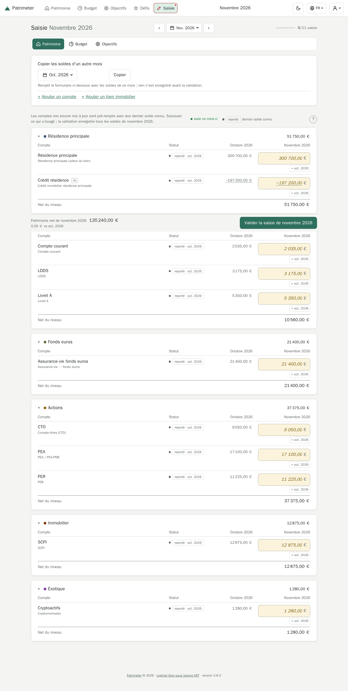
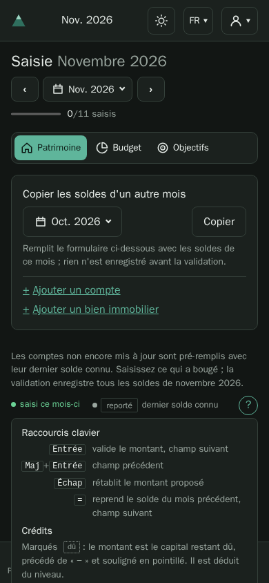

Saisie du mois¶
Menu Saisie du mois (Saisie sur téléphone), en trois onglets : Patrimoine (les soldes des comptes, décrits
ici) et Budget (les montants du budget du foyer) pour le même mois, et
Objectifs (créer et modifier vos objectifs d'épargne). Ce menu, le dernier à droite, est toujours mis
en avant ; tant qu'aucun solde du mois en cours n'est saisi, il passe en rouge, avec un point, pour vous le rappeler. La
partie Patrimoine montre tous les comptes ouverts ce mois-là, sur un seul écran, un tableau par niveau de la
pyramide. Saisissez les soldes (format français : 12 345,67), puis Valider la
saisie. Le mois prochain peut se saisir à l'avance (dernière flèche, ou le calendrier) ; après
l'enregistrement, la page Patrimoine affiche ce mois.

Lire l'écran¶
Chaque ligne montre le compte, son statut, son solde du mois précédent et le champ du mois saisi. Sur téléphone, le solde précédent passe sous le nom du compte.
- saisi (point vert) : un solde est déjà enregistré pour ce mois.
- reporté (point gris, badge) : aucun solde ce mois-ci ; le champ est pré-rempli avec le dernier solde connu, dont le mois est rappelé dans le badge.
- aucun solde : le compte n'a encore aucun relevé.
- à affiner (badge en pointillés) : montant approximatif donné à la création du compte, sur les pages de bienvenue. Corrigez-le si besoin : la validation l'enregistre comme solde du mois et retire la mention.
- Les crédits portent la mention dû : leur montant est le capital restant dû, précédé de « − » et souligné en pointillé, et il est déduit du niveau.
En haut à droite, une petite barre indique combien de comptes sont saisis (« 4/8 saisis »). Sous chaque tableau, Net du niveau donne le total du niveau ; en bas, le patrimoine net du mois. Ces totaux se recalculent pendant la frappe et tiennent compte de votre part des biens détenus à plusieurs (biens immobiliers).
Sous un montant modifié, un écart discret le compare au mois précédent (« +460,00 € vs oct. 2026 ») ; pour un crédit, une baisse du capital dû est un écart positif. Sous le patrimoine net du mois, le même écart porte sur tout le patrimoine, recalculé pendant la frappe.
Un compte qui n'a pas bougé se confirme d'un geste : le bouton = oct. 2026 sous son champ reprend le solde du mois précédent, le marque « saisi » et passe au compte suivant.
Un niveau dont tous les soldes sont déjà saisis ce mois-ci est replié : seuls son nom, la mention saisi et son total restent visibles, pour laisser la place à ce qui reste à faire. Touchez son nom pour le déplier et corriger un solde ; il se déplie aussi tout seul quand on y arrive au clavier. Ses soldes restent enregistrés avec les autres à la validation.
Saisir vite au clavier¶
| Touche | Effet |
|---|---|
| Entrée | confirme le montant (le compte passe « saisi ») et passe au champ suivant, sans envoyer le formulaire |
| Maj + Entrée | revient au champ précédent |
| Échap | rétablit le montant proposé |
| = | reprend le solde du mois précédent (le compte passe « saisi ») et passe au champ suivant |
Ces raccourcis, et le rappel sur les crédits, sont dans l'aide ? à droite de la légende.

Ce qui est enregistré¶
- Valider la saisie enregistre tous les soldes affichés comme soldes du mois.
- Un compte laissé vide n'est pas enregistré : il garde son dernier solde connu, reporté sur les mois suivants. Inutile donc de ressaisir chaque mois un compte qui ne bouge pas.
- Pour un crédit, saisissez le capital restant dû, avec ou sans le « − » :
167 612,87et−167 612,87désignent le même montant. - Pour un bien immobilier, saisissez la valeur totale du bien : Patrimeter applique votre part.
- Pour un autre mois, choisissez-le en haut de la page : rattraper un mois oublié ou corriger un mois passé. Tant qu'aucun compte n'existe, la saisie reste sur le mois en cours et ne propose ni autre mois ni copie des soldes : seulement Créer un compte et Créer un bien immobilier.
- Si la saisie change le statut d'un objectif d'épargne, un message le dit aussitôt (« Objectif « Apport » : En retard → Sur la bonne voie »).
Copier les soldes d'un autre mois¶
Pour remplir vite une année passée, partez d'un mois déjà saisi : Copier les soldes d'un autre mois, en haut de la saisie, remplit le formulaire avec les soldes du mois choisi (saisis ou reportés). Le mois se choisit dans le calendrier, comme en haut des pages. Les lignes copiées portent la mention « copié » ; corrigez ce qui a changé, puis Valider la saisie : rien n'est enregistré avant. Un compte sans solde au mois choisi garde sa valeur habituelle. Le même cadre mène à l'ajout d'un compte ou d'un bien immobilier.
Remonter dans le temps. Vous avez commencé Patrimeter en novembre et voulez saisir octobre ? Allez sur octobre : s'il n'y a encore aucun compte ouvert ce mois-là, la page propose directement la copie, depuis le mois courant. Copiez les soldes de novembre : les comptes ouverts après octobre sont repris eux aussi, avec la mention « ouverture avancée ». À la validation, leur date d'ouverture passe au 1er octobre et leurs soldes d'octobre sont enregistrés ; un compte dont vous videz le champ reste ouvert à sa date. Pour un bien immobilier, la quote-part définie à l’ouverture s’applique aussi au mois repris, y compris pour le crédit lié au prorata. Les changements ultérieurs restent datés.